在本章中，您将了解AWS步骤函数服务，并通过使用AWS控制台连接到AWS Lambda来创建AWS步骤函数。您还将学习使用无服务器框架创建AWS步骤函数连接，最后您将查看深度学习工作流的示例项目。
我们将讨论以下主题:
本章的技术要求如下:
在本节中，我们将介绍AWS Step Functions服务，包括其功能以及使用该服务的价格。
处理工作流是不同服务之间交互的附加方法。如果你想在深度学习中建立一个多步骤的过程，这可能意味着加载数据，然后预处理数据并在其上运行模型。虽然您可以在这些后端节点之间放置查询，但是很难监控单个任务的处理。这就是工作流非常方便的地方。基本上，工作流服务在需要时负责每个节点的调用，并处理处理作业的中间状态。它允许您对每个任务发生的情况有一个高层次的了解，并跟踪任务失败和超时。最后，它允许您在工作流中非常灵活地使用组件。
AWS步骤功能是一种AWS服务，允许您将工作流作为状态机来管理。它可以连接到任何处理后端，并具有与AWS Lambda的本机集成。它有一个现收现付的系统，这使它非常方便。
我们现在来看看阶跃函数的具体特性:
step函数的主要优势之一是现收现付系统。很简单每10000次请求25美分，其中前4000次请求每月免费。这使得它非常适合早期项目。
如果我们深入探究step函数在特性和可能的用例方面与SQS有何不同，我们可以说，SQS最适合于短、简单、低优先级的任务，这些任务的量非常大(每天数百万个任务)。另一方面，Step函数最适用于我们有复杂的多步骤流程的情况，这可能需要很多时间，并且我们希望保证每个任务的交付(每天数千个任务)。在下一节中，您将学习如何使用AWS控制台创建到AWS Lamda的AWS Step Functions连接。
在本节中，我们将使用AWS控制台创建setp函数。创建阶跃函数有两个主要步骤:
现在，我们将使用AWS控制台创建一个AWS Lambda实例:
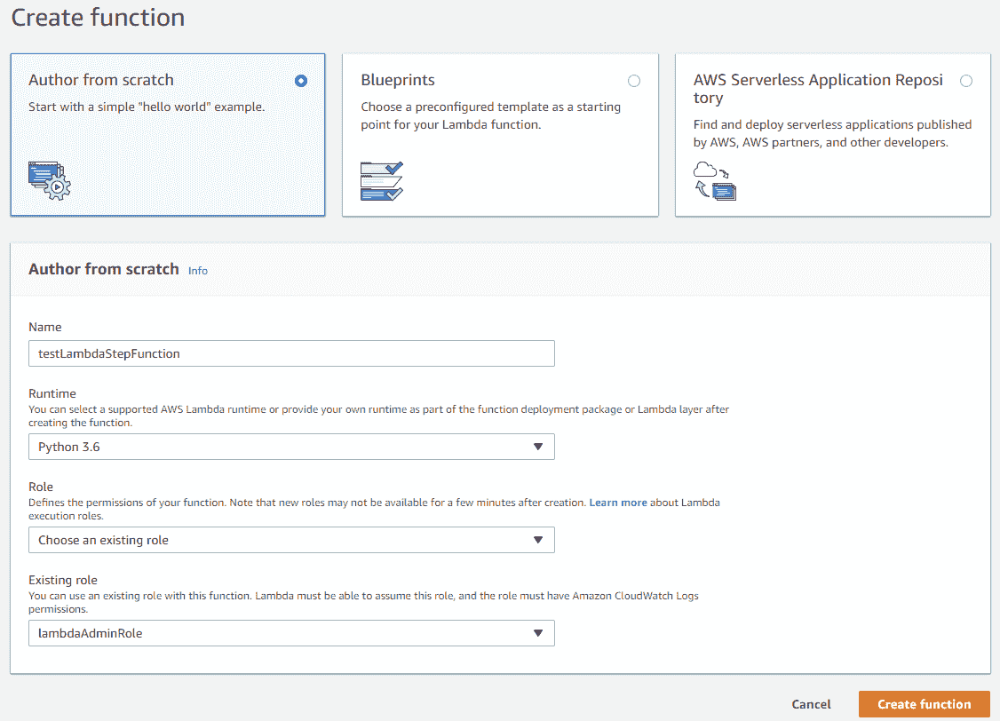
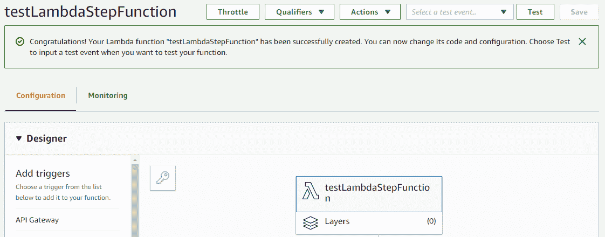
要创建阶跃函数，我们需要执行以下步骤:
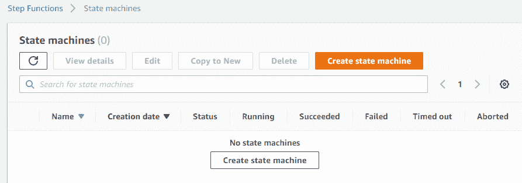
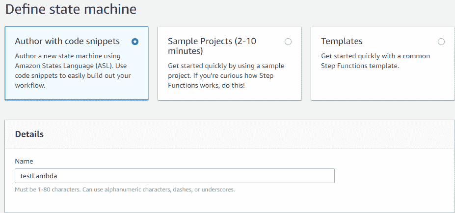
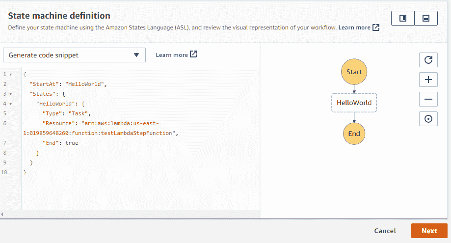
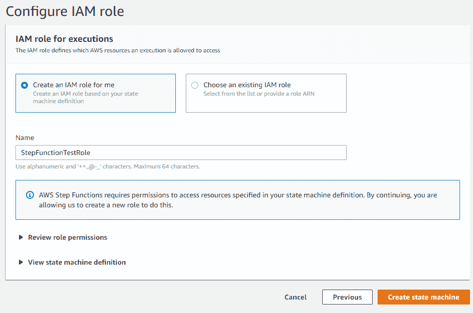
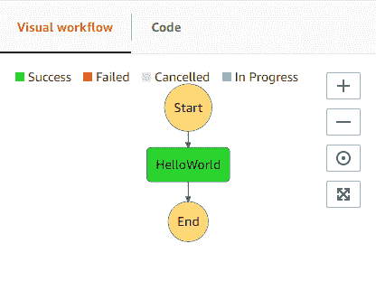
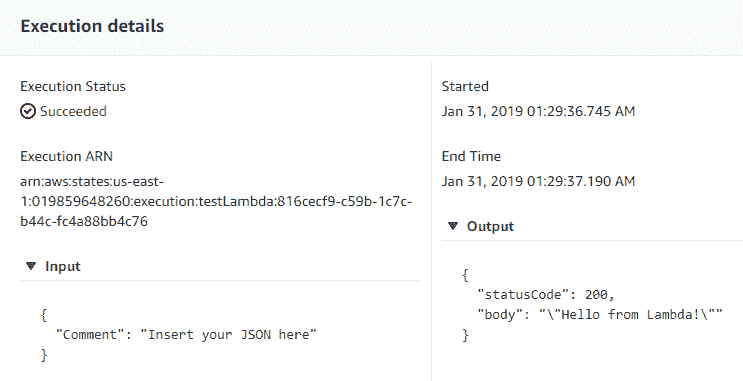
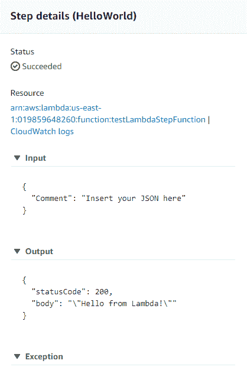
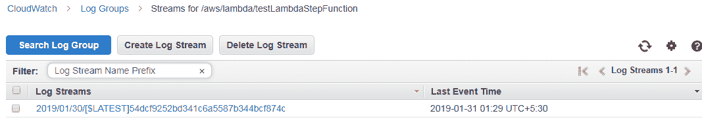
所以我们可以看到，step函数是一个非常方便的管理Lambda执行的服务。
在本节中，我们将使用无服务器框架创建阶跃函数。首先，让我们看看我们的项目文件:一个Python文件和无服务器配置文件。在配置文件中，我们将添加一些插件并描述步骤功能，这是一件复杂的事情。
因此，让我们从实际代码开始研究无服务器配置文件中的步骤功能:
让我们通过执行ls命令来检查文件列表。如您所见，我们有index.py文件和serverless.yml配置文件服务文档。我们还为无服务器框架安装了插件。
让我们在这里看一下配置文件及其两个主要部分:
function:
branch:
handler: index.handlerBranch
map:
handler: index.handlerMap
reduce:
handler: index.handlerReduce
plugins: - serverless-step-functions
- serverless-pseudo-parameters
def handlerMap(event,context):
return event
def handlerReduce(event,context):
return event
def handlerBranch(event,context):
return 'Hello world'
现在，让我们通过执行以下命令来部署我们的服务:
serverless deploy
前面的命令部署了您的服务，如下面的屏幕截图所示:

作为部署的一部分，它将为我们提供API网关的URL，如下面的屏幕截图所示:
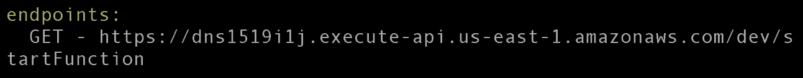
现在让我们在命令行中测试URL:
curl https://dns1519ilj.execute-api.us-east-1.amazonaws.com/dev/startFunction
您可以在浏览器中查看结果。在下面的截图中，你可以看到我们的步骤功能:
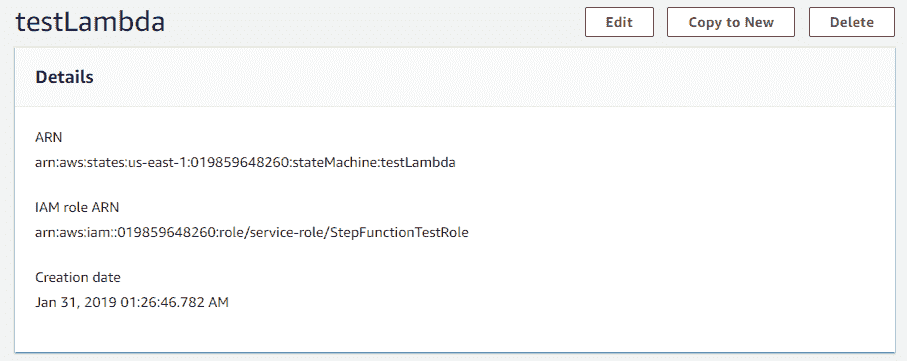
在下面的屏幕截图中，我们可以看到最近一次执行很成功:
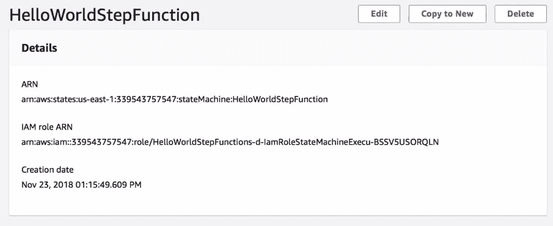
您可以检查每个节点的输入和输出。如果有任何错误，您可以在异常部分检查它们。
两个分支都返回hello world，步骤节点合并结果并将其作为步骤函数的结果返回:
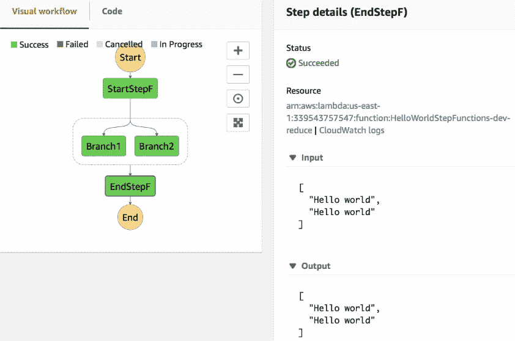
在这里，让我们检查执行的时间表。还可以看到分支几乎同时启动。
在下一节中，我们将查看深度学习工作流项目的一个示例。
首先，让我们看看下面的项目文件。我们有主要的Python文件、服务集成文件，以及一些库和初始模型。在配置文件中，我们将添加一些插件并描述步骤功能，这是一件复杂的事情。
我们的Python文件的主要区别是我们将有三个函数。人们将把一系列URL链接映射成单独的东西。另一个将在链接上运行一个模型。最后一个将结合结果。部署的结构将类似于上一节中的结构。我们将跳过模型在S3的部署，因为我们在前一章中已经讨论过了。
这里，我们需要部署无服务器框架，然后我们可以使用CLI检查trance:
provider:
name: aws
region: us-east-1
runtime: python3.6
memorySize: 1536
timeout: 30
iamRoleStatements:
- Effect: "Allow"
Action:
- "s3:ListBucket"
Resource:
- arn:aws:s3:::serverlessdeeplearning
- Effect: "Allow"
Action:
- "s3:GetObject"
Resource:
- arn:aws:s3:::serverlessdeeplearning/*
functions:
main:
handler: index.handler
map:
handler: index.map
reduce:
handler: index.reduce
stepFunctions:
stateMachines:
DeepLearningWorkflow:
events:
- http:
path: gofunction
method: POST
name: DeepLearningWorkflow
definition:
StartAt: StartStepF
States:
StartStepF:
Type: Task
Resource: arn:aws:lambda:#{AWS::Region}:#{AWS::AccountId}:function:${self:service}-${opt:stage}-map
Next: Parallel
Parallel:
Type: Parallel
Next: EndStepF
Branches:
- StartAt: Branch1
States:
Branch1:
Type: Task
Resource: arn:aws:lambda:#{AWS::Region}:#{AWS::AccountId}:function:${self:service}-${opt:stage}-main
InputPath: '$.branch1.url'
ResultPath: '$.res'
End: True
- StartAt: Branch2
States:
Branch2:
Type: Task
Resource: arn:aws:lambda:#{AWS::Region}:#{AWS::AccountId}:function:${self:service}-${opt:stage}-main
InputPath: '$.branch2.url'
ResultPath: '$.res'
End: True
- StartAt: Branch3
States:
Branch3:
Type: Task
Resource: arn:aws:lambda:#{AWS::Region}:#{AWS::AccountId}:function:${self:service}-${opt:stage}-main
InputPath: '$.branch3.url'
ResultPath: '$.res'
End: True
EndStepF:
Type: Task
Resource: arn:aws:lambda:#{AWS::Region}:#{AWS::AccountId}:function:${self:service}-${opt:stage}-reduce
End: true
plugins:
- serverless-step-functions
- serverless-pseudo-parameters
def map(event, context):
dictMap = {}
dictMap['branch1'] = {'url':event[0]}
dictMap['branch2'] = {'url':event[1]}
dictMap['branch3'] = {'url':event[2]}
return dictMap
def reduce(event, context):
vecRes = []
for res in event:
vecRes.append(res['res'])
return vecRes
在这种情况下，我们将有三个URL，狗、熊猫和小熊猫图片来自免费图片网站。
serverless deploy
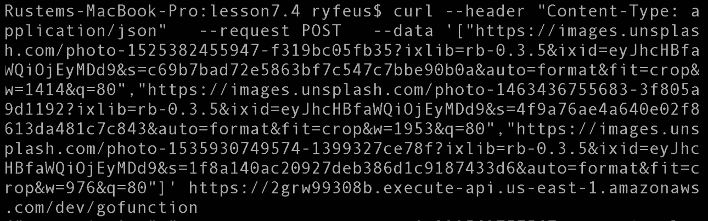
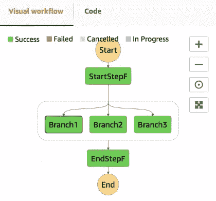
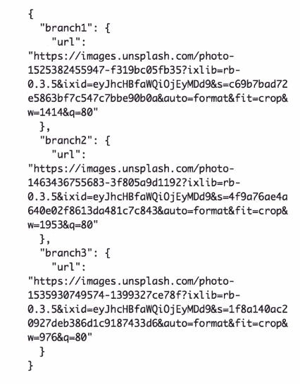
此外，我们可以检查执行的时间线，看到几乎所有的分支都是同时开始的。
这意味着并行化确实使我们能够更快地处理链接列表。
在本章中，我们学习了AWS步骤功能服务，包括其功能和定价。我们还学习了如何使用AWS控制台将AWS Step函数连接到AWS Lambda。我们还看到了如何使用无服务器框架创建step函数，甚至创建了深度学习工作流。